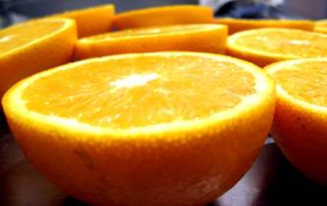

Este grupo de nutrientes está compuesto por las vitaminas y los minerales. Se diferencian de los macronutrientes en que éstos son necesarios en pequeñas cantidades para mantener la salud, pero no para producir energía. Esto no significa que sean menos importantes, todos lo son y todos se relacionan entre sí.
Las vitaminas son nutrientes que, aunque en pequeñas cantidades, son vitales para el organismo. En general no pueden ser fabricados por el organismo, por lo cual deben obtenerse de los alimentos que ingerimos (son nutrientes esenciales). Aunque todos los alimentos aportan vitaminas en mayor o menor cantidad, no hay ningún alimento que las posea todas y menos aún en las cantidades necesarias para el organismo. Por tanto, hay que buscar una dieta variada y equilibrada que incluya abundancia de frutas y verduras, por su gran contenido en vitaminas.

Las deficiencias de vitaminas y los excesos de algunas de ellas, producen enfermedades de mayor o menor gravedad. Conozcamos algunas de las vitaminas y dónde las podemos encontrar:
Tipo vitamina | Ejemplos |
Vitamina C | Frutas frescas, limón, pomelo, naranja, kiwi, tomates |
Vitamina B1 | Cereales, legumbres |
Vitamina B9 | Verduras verdes con hojas (acelga, espinacas), huevos |
Vitamina B3 | Carnes, pollo, legumbres, cereales, panes integrales |
Vitamina B2 | Leche, derivados, hígado, huevos, almendras |
Vitamina A | Zanahoria, paté, queso, hígado |
Vitamina E | Aceite de girasol, oliva, leche, derivados |
Vitamina D | Conservas de pescado (sardinas, atún), leche |
El contenido de vitaminas en alimentos depende muchas veces del modo en que cocinemos o preparemos nuestros alimentos. Por ejemplo, si a las verduras las dejamos hervir durante mucho tiempo, el contenido de las vitaminas será menor. Sucede lo mismo cuando pelamos frutas y verduras mucho tiempo antes de consumirlas, o cuando consumimos las frutas y verduras sin cáscara. ¿Pero saben qué? La congelación o la refrigeración de los alimentos no afecta la composición de estas vitaminas aun cuando se congelen por períodos prolongados. Y si cocinamos a olla a presión o al vapor, se pierden menos vitaminas que si hervimos las verduras.
Los minerales son elementos químicos simples cuya presencia es imprescindible para la actividad de las células de nuestro organismo. En ningún caso pueden ser sintetizados por el organismo, es decir, son nutrientes esenciales. Intervienen en muchas funciones importantes de nuestro cuerpo, por ejemplo dándole consistencia a nuestro esqueleto.
Al igual que en el caso de las vitaminas, ningún alimento posee todos los minerales en las cantidades necesarias y por ello la dieta ha de ser variada y equilibrada. También, como en el caso de las vitaminas, los excesos de algunos minerales producen alteraciones en el organismo; esto ha de tenerse en cuenta a la hora de tomar suplementos vitamínicos y de minerales. Se debe consultar con el médico antes de consumir estos preparados.
Conozcamos algunos minerales: